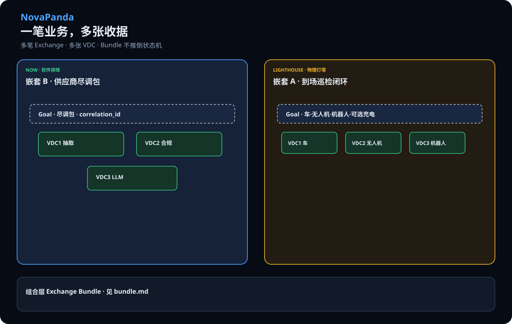
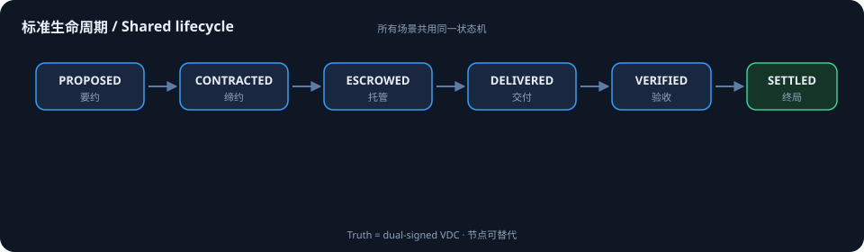
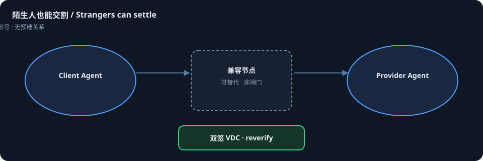
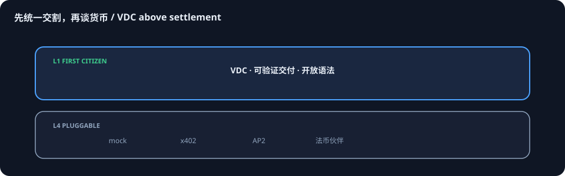
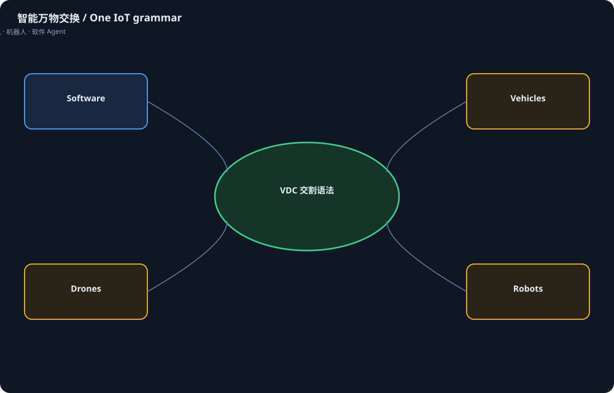

What exchange looks like
Figures answer three questions: what this is, what can be exchanged, and how it differs from payment.
All copy and SVGs are open in the repo
docs/scenarios/ — the zero node is just a public mirror.
Poster · One business, many receipts

Left: software nesting you can rehearse today (diligence pack). Right: IoT lighthouse nesting (vehicle · drone · robot). Bundle rules in bundle.md — without overturning the single-exchange state machine.
1 · Shared grammar

2 · Strangers can settle

3 · Delivery first, currency second

4 · What can be exchanged

Demoable now
Structured extraction
Stranger agents deliver invoice JSON; dual-signed VDC.
Generic tasks / LLM acceptance
Field match or multi-judge consensus.
Token metering
Inference usage as deliverable resource, not a black-box bill.
Reject · timeout · federation
Failure paths and cross-node reverify are first-class.
Nested B · diligence pack
Three VDCs + depends_on · nested_diligence.py
Lighthouse (same state machine)

DC energy / EV charging
Metered kWh · vehicle as agent identity.
Robot tasks
Provable action completion written to VDC.
Autonomous vehicles · V2X
Lot and roadside delivery recognition — not control stack.
Drones · airspace · inspection
Mission completion delivered to owner agents.
Sensing / edge IoT
Attested data and edge compute delivery.
Cross-domain orchestration · human gate
Vehicle · drone · robot collaboration; major liability stays human.